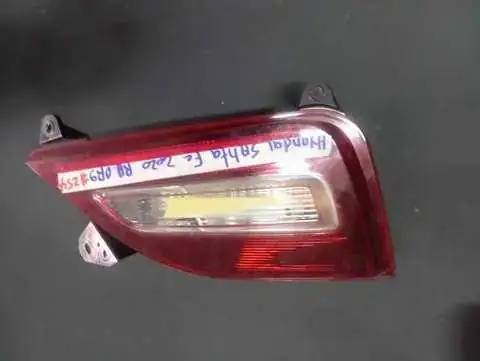
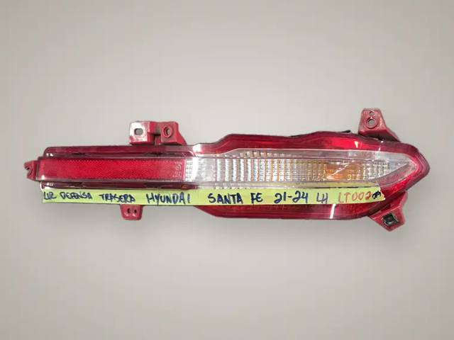
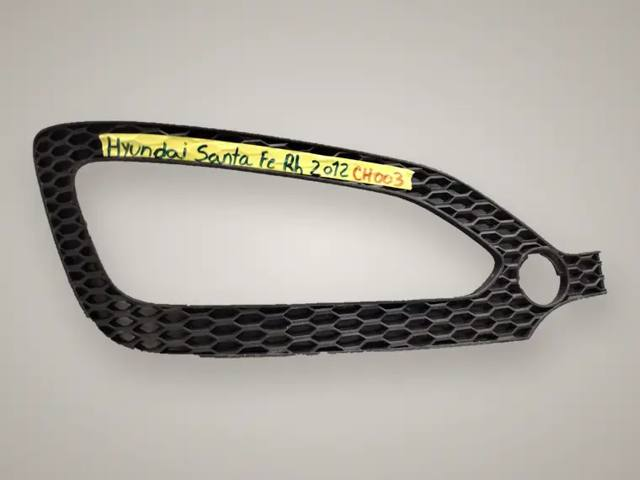
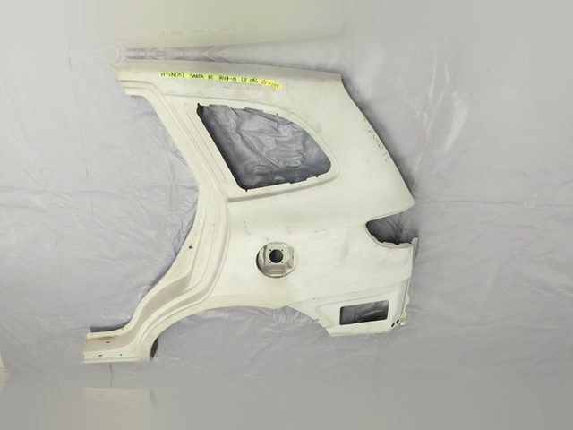

Piezas de carrocería para Hyundai Santa FE
19 piezas disponibles hoy para Hyundai Santa FE, cada una con su foto y su código: lámparas traseras (4), covers de halógena (4), tapas superiores de radiador (2), guardafangos traseros (2). Dinos el año de tu carro y te confirmamos si le sirve.
- Garantía de 3 días
- Foto real de cada pieza
- Efectivo, Yappy o ACH
- Lunes a sábado, 8:00 a. m. a 5:00 p. m.
Lámparas traseras para Hyundai Santa FE 4

254Santa FE2019-20 · lado derecho · original 274Santa FE2012 · lado izquierdo · original nuevo
274Santa FE2012 · lado izquierdo · original nuevo 276Santa FE2024 · lado izquierdo · original
276Santa FE2024 · lado izquierdo · original
LT002Santa Fe2021-24 · lado izquierdo · originalCovers de halógena para Hyundai Santa FE 4

CH003Santa Fe2012 · lado derecho · original CH019Santa Fe2012 · lado izquierdo · original
CH019Santa Fe2012 · lado izquierdo · original CH085Santa Fe2013-15 · lado derecho · original
CH085Santa Fe2013-15 · lado derecho · original CH086Santa Fe2013-15 · lado izquierdo · original
CH086Santa Fe2013-15 · lado izquierdo · originalTapas superiores de radiador para Hyundai Santa FE 2
 TA039Santa Fe
TA039Santa Fe TA006Santa Fe Sport
TA006Santa Fe SportGuardafangos traseros para Hyundai Santa FE 2

GFT019Santa FE2013-18 · lado izquierdo · original GFT020Santa FE2018-24 · lado izquierdo · original
GFT020Santa FE2018-24 · lado izquierdo · original 480Santa FE
480Santa FE RB016Santa Fe
RB016Santa Fe GF006Santa Fe
GF006Santa Fe MR015Santa Fe
MR015Santa Fe R061Santa Fe
R061Santa Fe